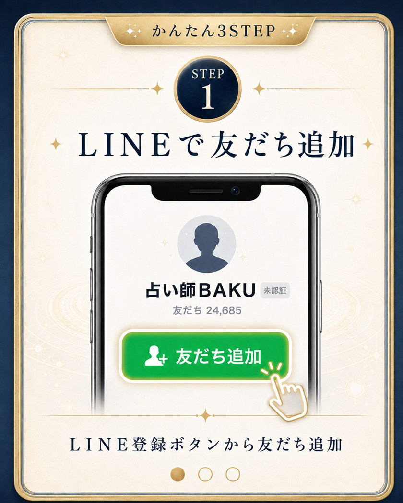
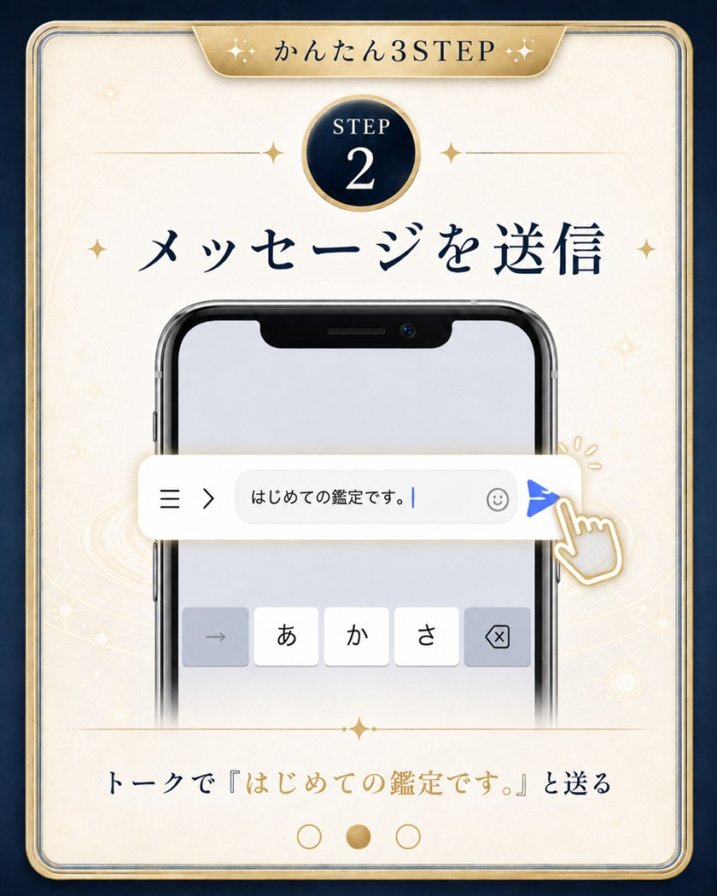
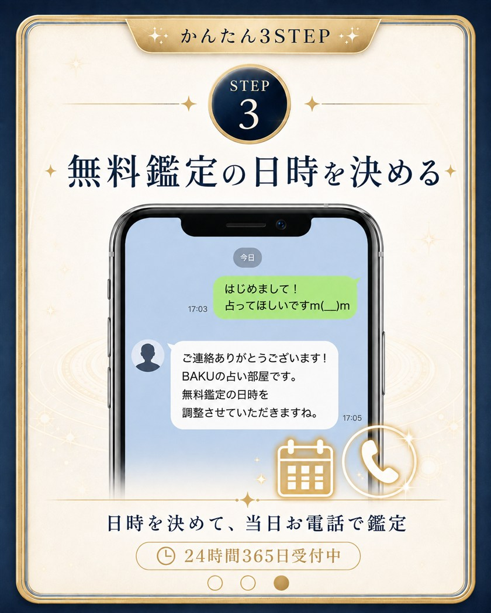

彼の気持ちが、わからない夜に。
声で、話してみませんか。
プロフィール
占い師が頼る、占い師。
占い師BAKU
占い師歴
13年以上
占ってきた人数
20,000人以上
プロデュースした占い師
700人以上
運営してきた占いサイト
5サイト
ご利用の流れ
LINE登録はかんたん3STEP



無料この3STEPで、いますぐ始める
＼ 登録は30秒・24時間365日受付 ／
鑑定料金
「高い」を、私が変える。
電話占いは高い——。
その常識ごと、覆します。
¥550〜（税込）
ベテラン占い師の平均相場
¥330〜（税込）
レギュラー占い師の平均相場
→
1分間の特別料金¥200（税込）/1分
13年やってきたベテランの鑑定を、この価格で。
低価格 × 高クオリティ
さらに！
LINE登録した方は 初回10分間、無料 で鑑定します。
11分目以降も、2回目以降も 1分200円（税込）のまま。
あとから追加料金がかかることはありません。
無料まずは10分、無料で相談してみる
＼ 10分で切れば、料金は0円のままです ／
お客様の声
相談してよかった、
という声。
という声。
同じように悩んでいた方が、
いま 笑顔で 送ってくれた言葉です。
既読スルーの相談
3日既読無視されてて、もう終わりなのかなって…
大丈夫、既読を止めた理由がちゃんとあります。順番に見ていきましょうね。
本命か遊びかの相談
本命か遊びか、ずっとモヤモヤしてました
相手の中の“本音”を視てみますね。今の距離感には理由があります。
復縁の相談
別れてから半年、もう一度会いたいって思ってます
タイミングと、あなたの動き方が鍵になりそうです。焦らず進めましょう。
まずは、無料の電話から。
ひとりで悩み続ける
必要は、ありません。
必要は、ありません。
彼の気持ちも、これからの恋も。
まずは声で、話してみてください。
無料LINE登録で無料電話鑑定を受ける
＼ 登録は30秒・一言送るだけ ／